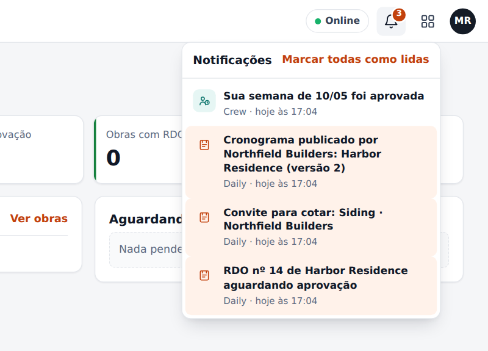
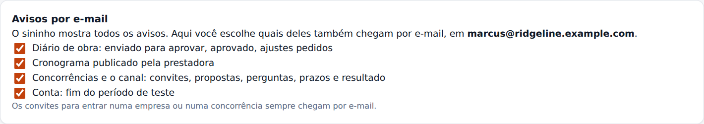
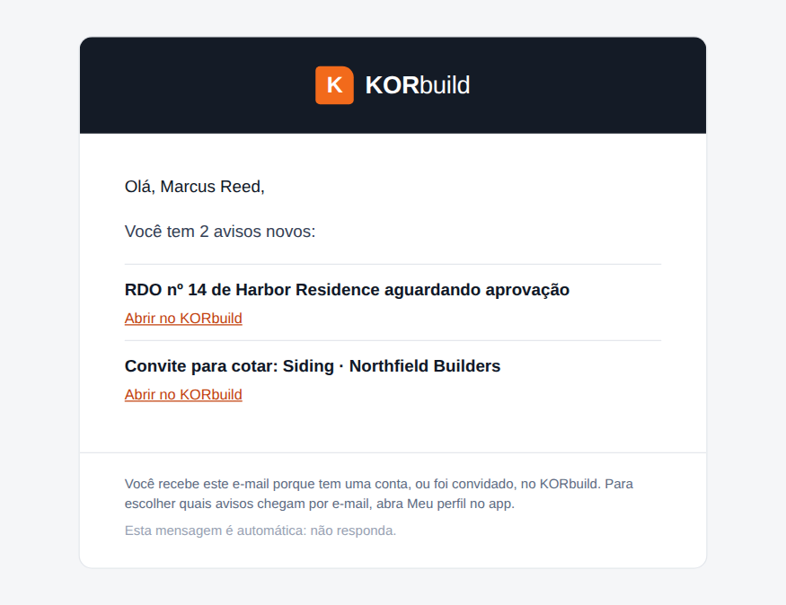

Tudo o que acontece entre pessoas e empresas no KORbuild chega a você em dois lugares: o sininho, dentro do aplicativo, e, para alguns avisos, um e-mail. Os avisos são gravados pelo próprio banco de dados no momento do fato; por isso são os mesmos em todos os aparelhos e não dependem de um celular estar com o app aberto.
O sininho
O sininho fica no alto de todas as telas. Um número vermelho conta o que você ainda não leu. Toque num aviso para abrir a tela de que ele fala; ele passa a lido, em todos os aparelhos.

O sininho mostra também os lembretes que o próprio celular calcula (o lembrete do RDO às 16h, o RDO atrasado, a etapa atrasada no cronograma, o ponto sem saída). Esses existem só no aparelho e nunca viram e-mail.
Quais avisos existem
| Área | Aviso | Para quem | |
|---|---|---|---|
| Daily | Um RDO aguarda aprovação | Quem aprova | Sim |
| Daily | O escritório pediu ajustes | Quem preencheu o RDO | Sim |
| Daily | O RDO foi aprovado | Quem preencheu o RDO | Sim |
| Cronograma | Um cronograma foi publicado pela prestadora | A construtora | Sim |
| Crew | Sua semana foi aprovada, ou devolvida com o motivo | O funcionário | Só o sininho |
| Concorrências | Convite para cotar, prazo prorrogado, aviso a todos, respostas e mensagens | As empresas convidadas | Sim |
| Concorrências | Chegou uma proposta, uma empresa não vai participar, o prazo venceu | A contratante | Sim |
| Concorrências | Você venceu, a concorrência foi para outra empresa, foi cancelada | As empresas convidadas | Sim |
| Concorrências | Quarteirização: pedido para aprovar, aprovada, recusada | A empresa de cima e a de baixo | Sim |
| Conta | O teste termina em 7 dias ou amanhã; o plano foi alterado pelo KORbuild | Quem administra a conta | Sim |
Escolher o que chega por e-mail
Em Meu perfil › Avisos por e-mail você liga ou desliga cada grupo: diário de obra, cronograma, concorrências e o canal, e a conta. Desligar só para o e-mail; o sininho continua mostrando tudo. Os convites para entrar numa empresa ou numa concorrência sempre chegam por e-mail.

Como é o e-mail
Os avisos não saem um a um. Quando vários acontecem perto uns dos outros, o KORbuild espera cerca de 3 minutos e manda um e-mail que lista todos. Os urgentes (um convite, por exemplo) saem na hora. Cada e-mail tem um botão que abre a tela exata no aplicativo. O texto segue o idioma da pessoa: português ou inglês.

Quem não tem conta no KORbuild (uma empresa convidada para cotar por e-mail, por exemplo) recebe o convite com um link pessoal; o link abre a concorrência sem precisar de login.
Regras de negócio
| ID | Regra | Situação |
|---|---|---|
| NTF-001 | Os avisos são gravados pelo banco de dados quando o fato acontece, não pelo aplicativo. São os mesmos em todos os aparelhos. | Funcionando |
| NTF-002 | Cada pessoa lê só os próprios avisos. | Funcionando |
| NTF-003 | O aviso aparece no idioma da tela; o e-mail usa o idioma gravado na conta da pessoa. | Funcionando |
| NTF-004 | Avisos do mesmo tipo, para a mesma tela, ainda não lidos, viram um só. | Funcionando |
| NTF-005 | Os e-mails esperam cerca de 3 minutos e juntam os avisos da mesma pessoa; os urgentes saem na hora. | Funcionando |
| NTF-006 | Cada pessoa escolhe quais grupos de avisos também chegam por e-mail. O sininho nunca é desligado. | Funcionando |
| NTF-007 | Um aviso só é marcado como enviado depois que o servidor de e-mail aceitou a mensagem. Se o envio falha, tenta de novo; depois de 5 tentativas para e aparece na administração da plataforma. | Funcionando |
| NTF-008 | Os convites para entrar numa empresa ou numa concorrência sempre chegam por e-mail. | Funcionando |
| NTF-009 | Os lembretes do sininho calculados pelo celular nunca viram e-mail. | Funcionando |